本章学习目标
- 理解损失的随机性，以及描述随机变量的数学工具。
- 掌握常见的离散型、连续型分布及其性质。
- 利用随机变量变换的方法得到新的分布。
- 理解矩估计和极大似然估计方法的思想，并使用R语言进行实际编程操作。
- 应用统计推断方法选择合适的损失分布。
在非寿险研究中，损失（例如索赔发生与否、索赔频率、每次事故的索赔金额、累积损失金额等）通常无法被准确预测，故可以用随机变量来表示。本章从随机变量及其分布的基本概念出发，系统介绍非寿险精算中常用的离散型和连续型分布，并讨论分布变换、参数估计和拟合优度检验等方法。
1.1 随机变量及其分布
随机变量可以理解为一个不确定的、反映随机事件结果的数值，通常记为大写英文字母 $X, Y$ 等。根据取值范围，可分为离散型随机变量（取值范围为有限个或可列个）和连续型随机变量（可取某个区间中的一切值）。
1.1.1 随机变量的描述
随机变量的取值规律可以运用累积分布函数、概率分布列/概率密度函数、生存函数等进行刻画。
对于离散型随机变量，使用概率分布列描述其取每个具体值的概率：$p(x_i) = \text{P}(X = x_i)$。
对于连续型随机变量，使用概率密度函数（pdf）描述其取值规律。若存在非负可积函数 $f(x) \geq 0$，使 $F(x)=\int_{-\infty}^{x}f(t)\mathrm{d}t$，则称 $f(x)$ 为随机变量 $X$ 的概率密度函数。显然，$f(x)=F'(x)$，$\int_{-\infty}^{\infty} f(x) \mathrm{d}x = 1$。
1.1.2 随机变量的数字特征
1. 数学期望
数学期望反映随机变量的中心趋势。离散型：$\mathbb{E}X = \sum_{i}x_ip(x_i)$；连续型：$\mathbb{E}X = \int_{-\infty}^{\infty}xf(x)\mathrm{d}x$。
期望的运算性质：$\mathbb{E}(aX+b) = a\mathbb{E}(X) + b$；$\mathbb{E}(X + Y) = \mathbb{E}(X) + \mathbb{E}(Y)$；若 $X$ 与 $Y$ 不相关，则 $\mathbb{E}(XY) = \mathbb{E}(X)\mathbb{E}(Y)$。
2. 方差
方差衡量随机变量取值的离散程度：$\text{Var}(X) = \mathbb{E}[(X-\mathbb{E}X)^2] = \mathbb{E}(X^2)-\mathbb{E}^2(X)$。
3. 有限期望值和平均超越值
4. 矩
$k$ 阶原点矩：$\mu_k' = \mathbb{E}(X^k)$；$k$ 阶中心矩：$\mu_k = \mathbb{E}[(X - \mathbb{E}X)^k]$。期望是1阶原点矩，方差是2阶中心矩。
由此可定义：变异系数 $\sigma/\mu$；偏度系数 $skew(X) = \mu_3/\sigma^3$；峰度系数 $kurt(X) = \mu_4/\sigma^4$。
5. 分位数
给定 $0 < q < 1$，随机变量 $X$ 的 $q$ 分位数 $x_q$ 定义为：$F(x_q) = q$。$q=0.5$ 时的分位数称为中位数。
1.1.3 概率母函数、矩母函数和累积量生成函数
累积量生成函数（CGF）定义为 $C_X(t) = \ln M_X(t)$。在0点处求导可得：$\mu = C_X'(0)$，$\sigma^2 = C_X''(0)$，$\mathbb{E}[(X-\mathbb{E}X)^3] = C_X'''(0)$。
1.2 常见的离散型分布
在非寿险精算中，离散型分布广泛用于保险索赔次数的建模。本节介绍二项分布、泊松分布和负二项分布。
1.2.1 二项分布（Binomial distribution）
若随机变量 $N$ 服从参数为 $n$ 和 $p$ 的二项分布，记为 $\text{B}(n, p)$，其中 $n$ 为正整数且 $0 < p < 1$。当 $n = 1$ 时退化为伯努利分布。
性质
- 可描述 $n$ 个独立同分布风险所组成的风险集合的索赔频率。
- 索赔频率存在极大值 $n$（如一次自然灾害造成的伤亡人数）。
- $p = 0.5$ 时分布对称；$p < 0.5$ 时正偏；$p > 0.5$ 时负偏。
- 众数为 $[(n+1)p]$，若 $(n+1)p$ 为整数则具有双众数。
- 方差小于均值——与泊松分布和负二项分布的主要区别。
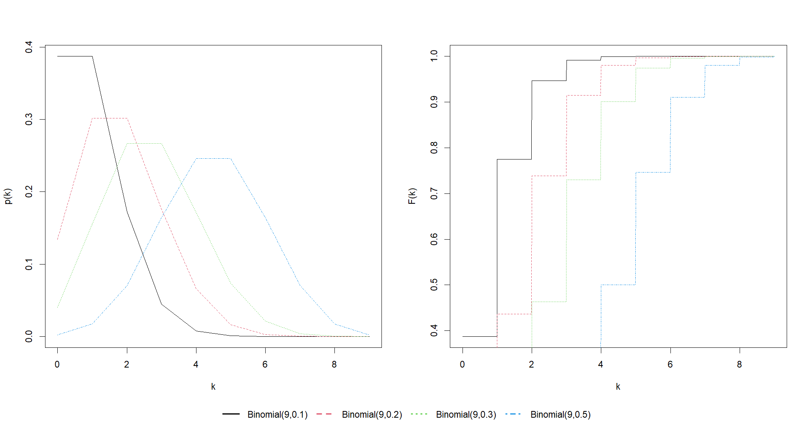
## 二项分布的概率分布列和分布函数
x <- seq(0, 9, 1)
# 概率分布列
plot(x, dbinom(x, size = 9, prob = 0.1), type = "l", col = 1, lty = 1,
xlab = "k", ylab = "p(k)")
lines(x, dbinom(x, size = 9, prob = 0.2), col = 2, lty = 2)
lines(x, dbinom(x, size = 9, prob = 0.3), col = 3, lty = 3)
lines(x, dbinom(x, size = 9, prob = 0.5), col = 4, lty = 4)
# 累积分布函数
plot(x, pbinom(x, size = 9, prob = 0.1), type = "l", col = 1, lty = 1,
xlab = "k", ylab = "F(k)")
lines(x, pbinom(x, size = 9, prob = 0.2), col = 2, lty = 2)
lines(x, pbinom(x, size = 9, prob = 0.3), col = 3, lty = 3)
lines(x, pbinom(x, size = 9, prob = 0.5), col = 4, lty = 4)import numpy as np
import matplotlib.pyplot as plt
from scipy import stats
x = np.arange(0, 10)
fig, axes = plt.subplots(1, 2, figsize=(14, 5))
# 概率分布列
for p, color, ls in [(0.1, 'C0', '-'), (0.2, 'C1', '--'),
(0.3, 'C2', '-.'), (0.5, 'C3', ':')]:
axes[0].plot(x, stats.binom.pmf(x, 9, p), color=color, ls=ls,
label=f'p={p}')
axes[0].set_xlabel('k'); axes[0].set_ylabel('p(k)')
axes[0].set_title('二项分布概率质量函数'); axes[0].legend()
# 累积分布函数
for p, color, ls in [(0.1, 'C0', '-'), (0.2, 'C1', '--'),
(0.3, 'C2', '-.'), (0.5, 'C3', ':')]:
axes[1].plot(x, stats.binom.cdf(x, 9, p), color=color, ls=ls,
label=f'p={p}')
axes[1].set_xlabel('k'); axes[1].set_ylabel('F(k)')
axes[1].set_title('二项分布累积分布函数'); axes[1].legend()
plt.tight_layout(); plt.show()data binomial;
do k = 0 to 9;
p1 = pdf('BINOMIAL', k, 0.1, 9);
p2 = pdf('BINOMIAL', k, 0.2, 9);
p3 = pdf('BINOMIAL', k, 0.3, 9);
p4 = pdf('BINOMIAL', k, 0.5, 9);
cdf1 = cdf('BINOMIAL', k, 0.1, 9);
cdf2 = cdf('BINOMIAL', k, 0.2, 9);
cdf3 = cdf('BINOMIAL', k, 0.3, 9);
cdf4 = cdf('BINOMIAL', k, 0.5, 9);
output;
end;
run;
title "二项分布概率质量函数";
proc sgplot data=binomial;
series x=k y=p1 / legendlabel="p=0.1";
series x=k y=p2 / legendlabel="p=0.2";
series x=k y=p3 / legendlabel="p=0.3";
series x=k y=p4 / legendlabel="p=0.5";
yaxis label="p(k)";
run;
title;1.2.2 泊松分布（Poisson distribution）
若随机变量 $N$ 服从参数为 $\lambda > 0$ 的泊松分布，记为 $\text{Poi}(\lambda)$。
性质
- 均值和方差相等，都等于参数 $\lambda$。
- 可加性：若 $N_1 \sim \text{Poi}(\lambda_1)$，$N_2 \sim \text{Poi}(\lambda_2)$ 独立，则 $N_1+N_2 \sim \text{Poi}(\lambda_1+\lambda_2)$。
- 可分解性：总索赔次数 $N \sim \text{Poi}(\lambda)$，按概率 $p_1, p_2$ 分解为两类独立的泊松变量。
- $\lambda$ 较小时近似二项分布；$\lambda$ 较大时近似正态分布。
- 众数为 $[\lambda]$，若 $\lambda$ 为整数则具有双众数。
- 若事故发生时间间隔服从指数分布，则固定时间内事故次数服从泊松分布。
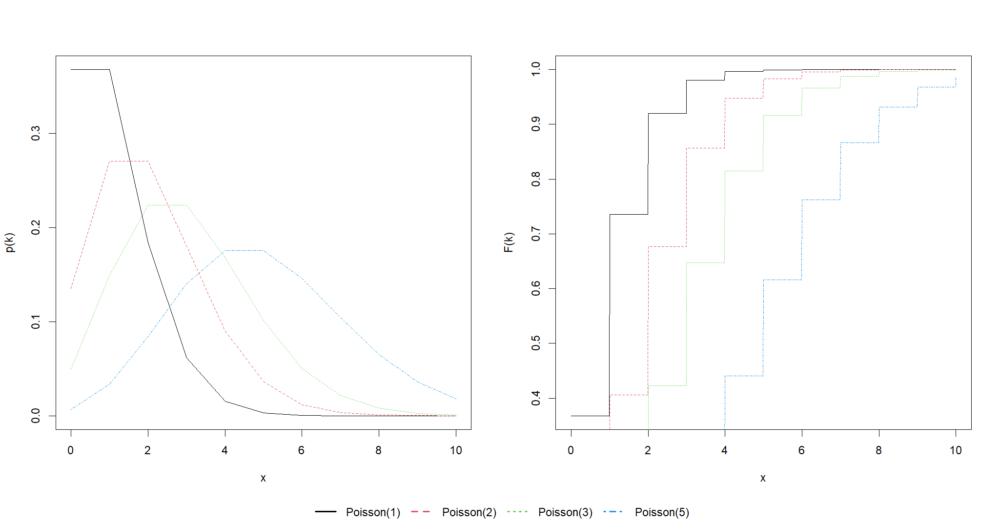
## 泊松分布的概率分布列和分布函数
x <- seq(0, 10, 1)
# 概率分布列
plot(x, dpois(x, lambda = 1), type = "l", col = 1, lty = 1,
xlab = "k", ylab = "p(k)")
lines(x, dpois(x, lambda = 2), col = 2, lty = 2)
lines(x, dpois(x, lambda = 3), col = 3, lty = 3)
lines(x, dpois(x, lambda = 5), col = 4, lty = 4)
# 累积分布函数
plot(x, ppois(x, lambda = 1), type = "l", col = 1, lty = 1,
xlab = "k", ylab = "F(k)")
lines(x, ppois(x, lambda = 2), col = 2, lty = 2)
lines(x, ppois(x, lambda = 3), col = 3, lty = 3)
lines(x, ppois(x, lambda = 5), col = 4, lty = 4)import numpy as np
import matplotlib.pyplot as plt
from scipy import stats
x = np.arange(0, 11)
fig, axes = plt.subplots(1, 2, figsize=(14, 5))
for lam, color, ls in [(1, 'C0', '-'), (2, 'C1', '--'),
(3, 'C2', '-.'), (5, 'C3', ':')]:
axes[0].plot(x, stats.poisson.pmf(x, lam), color=color, ls=ls,
label=f'λ={lam}')
axes[0].set_xlabel('k'); axes[0].set_ylabel('p(k)')
axes[0].set_title('泊松分布概率质量函数'); axes[0].legend()
for lam, color, ls in [(1, 'C0', '-'), (2, 'C1', '--'),
(3, 'C2', '-.'), (5, 'C3', ':')]:
axes[1].plot(x, stats.poisson.cdf(x, lam), color=color, ls=ls,
label=f'λ={lam}')
axes[1].set_xlabel('k'); axes[1].set_ylabel('F(k)')
axes[1].set_title('泊松分布累积分布函数'); axes[1].legend()
plt.tight_layout(); plt.show()data poisson;
do k = 0 to 10;
p1 = pdf('POISSON', k, 1);
p2 = pdf('POISSON', k, 2);
p3 = pdf('POISSON', k, 3);
p4 = pdf('POISSON', k, 5);
output;
end;
run;
title "泊松分布概率质量函数";
proc sgplot data=poisson;
series x=k y=p1 / legendlabel="lambda=1";
series x=k y=p2 / legendlabel="lambda=2";
series x=k y=p3 / legendlabel="lambda=3";
series x=k y=p4 / legendlabel="lambda=5";
yaxis label="p(k)";
run;
title;1.2.3 负二项分布（Negative Binomial distribution）
若随机变量 $N$ 服从参数为 $r > 0$ 和 $\beta > 0$ 的负二项分布，记为 $\text{NB}(r, \beta)$。
性质
- 具有两个参数，概率函数具有更大的灵活性。
- 方差大于均值——与泊松分布的重要差别。若观察值方差大于均值（过离散），负二项分布拟合更好。
- 是一种混合泊松分布：泊松参数服从伽马分布时，混合结果为负二项分布。
- 当索赔频率随时间线性增加时，适合使用负二项分布建模。
- 众数为 $[(r-1)\beta]$，若 $(r-1)\beta$ 为整数则具有双众数。
当 $r = 1$ 时，负二项分布退化为几何分布：$p_k = p(1-p)^k, \quad k = 0, 1, 2, \ldots$
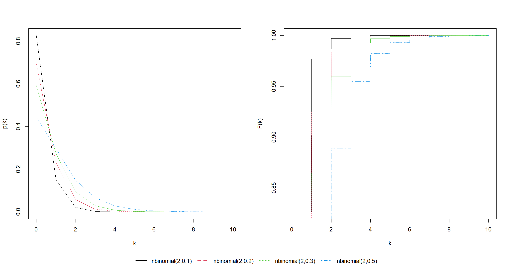
## 负二项分布：size = r, prob = 1/(1+beta)
x <- seq(0, 10, 1)
# 概率分布列
plot(x, dnbinom(x, size = 2, prob = 1/(1+0.1)), type = "l", col = 1, lty = 1,
xlab = "k", ylab = "p(k)")
lines(x, dnbinom(x, size = 2, prob = 1/(1+0.2)), col = 2, lty = 2)
lines(x, dnbinom(x, size = 2, prob = 1/(1+0.3)), col = 3, lty = 3)
lines(x, dnbinom(x, size = 2, prob = 1/(1+0.5)), col = 4, lty = 4)
# 累积分布函数
plot(x, pnbinom(x, size = 2, prob = 1/(1+0.1)), type = "l", col = 1, lty = 1,
xlab = "k", ylab = "F(k)")
lines(x, pnbinom(x, size = 2, prob = 1/(1+0.2)), col = 2, lty = 2)
lines(x, pnbinom(x, size = 2, prob = 1/(1+0.3)), col = 3, lty = 3)
lines(x, pnbinom(x, size = 2, prob = 1/(1+0.5)), col = 4, lty = 4)import numpy as np
import matplotlib.pyplot as plt
from scipy import stats
x = np.arange(0, 11)
fig, ax = plt.subplots(figsize=(8, 5))
for beta, color, ls in [(0.1, 'C0', '-'), (0.2, 'C1', '--'),
(0.3, 'C2', '-.'), (0.5, 'C3', ':')]:
p = 1 / (1 + beta)
ax.plot(x, stats.nbinom.pmf(x, 2, p), color=color, ls=ls,
label=f'β={beta}')
ax.set_xlabel('k'); ax.set_ylabel('p(k)')
ax.set_title('负二项分布概率质量函数'); ax.legend()
plt.tight_layout(); plt.show()data negbinom;
do k = 0 to 10;
p1 = pdf('NEGBINOMIAL', k, 1/(1+0.1), 2);
p2 = pdf('NEGBINOMIAL', k, 1/(1+0.2), 2);
p3 = pdf('NEGBINOMIAL', k, 1/(1+0.3), 2);
p4 = pdf('NEGBINOMIAL', k, 1/(1+0.5), 2);
output;
end;
run;
title "负二项分布概率质量函数";
proc sgplot data=negbinom;
series x=k y=p1 / legendlabel="beta=0.1";
series x=k y=p2 / legendlabel="beta=0.2";
series x=k y=p3 / legendlabel="beta=0.3";
series x=k y=p4 / legendlabel="beta=0.5";
yaxis label="p(k)";
run;
title;1.2.4 (a,b,0)与(a,b,1)分布类
二项分布、泊松分布和负二项分布（几何分布）均属于 (a, b, 0) 分布类，其取值概率满足递归关系：
| 分布 | $a$ | $b$ | $p_0$ |
|---|---|---|---|
| 二项分布 | $-\frac{p}{1-p}$ | $\frac{(n+1)p}{1-p}$ | $(1-p)^n$ |
| 泊松分布 | $0$ | $\lambda$ | $e^{-\lambda}$ |
| 负二项分布 | $\frac{\beta}{1+\beta}$ | $\frac{(r-1)\beta}{1+\beta}$ | $(1+\beta)^{-r}$ |
| 几何分布 | $\frac{\beta}{1+\beta}$ | $0$ | $(1+\beta)^{-1}$ |
在非寿险实务中，常需对零点概率进行调整，得到 (a, b, 1) 分布类。其递推关系从 $p_1$ 开始计算，$p_0$ 需单独设定。
## 零截断负二项分布的概率
x <- 0:10
p <- dnbinom(x, 4, 0.7) # 负二项分布的概率
p0 <- p[1] # 零点的概率
pt1 <- p[2:11] / (1 - p0) # 零截断分布在非0点上的概率
pt <- c(0, pt1) # 零截断分布的概率
com <- rbind(负二项 = p, 零截断负二项 = pt)
barplot(com, beside = TRUE, names.arg = 0:10, legend.text = TRUE)
## 零调整负二项分布的概率
pm0 <- 0.3 # 调整后的零点概率
pm1 <- (1 - pm0) * p[2:11] / (1 - p0)
pm <- c(pm0, pm1)
com <- rbind(负二项 = p, 零调整负二项 = pm)
barplot(com, beside = TRUE, names.arg = 0:10, legend.text = TRUE)import numpy as np
import matplotlib.pyplot as plt
from scipy import stats
x = np.arange(0, 11)
p_nb = stats.nbinom.pmf(x, 4, 0.7)
p0 = p_nb[0]
# 零截断
pt = np.zeros_like(p_nb)
pt[1:] = p_nb[1:] / (1 - p0)
# 零调整
pm0 = 0.3
pm = np.zeros_like(p_nb)
pm[0] = pm0
pm[1:] = (1 - pm0) * p_nb[1:] / (1 - p0)
fig, ax = plt.subplots(figsize=(10, 5))
width = 0.35
ax.bar(x - width/2, p_nb, width, label='负二项', alpha=0.7)
ax.bar(x + width/2, pt, width, label='零截断负二项', alpha=0.7)
ax.set_xlabel('k'); ax.set_ylabel('概率')
ax.set_title('负二项分布与零截断负二项分布')
ax.set_xticks(x); ax.legend()
plt.tight_layout(); plt.show()1.3 常见的连续型分布
连续型分布常用于描述索赔金额的取值规律。本节介绍指数分布、伽马分布、逆高斯分布、帕累托分布、对数正态分布和威布尔分布。
1.3.1 指数分布（Exponential distribution）
有限期望函数存在显式解：$\mathbb{E}[(X \wedge d)^k] = \frac{\gamma(k+1, \lambda d)}{\lambda^k} + d^k e^{-\lambda d}$。
性质
- 变异系数等于1，众数等于0。
- 若索赔次数服从参数为 $\lambda$ 的泊松分布，则两个相邻损失发生的时间间隔服从参数为 $1/\lambda$ 的指数分布。
- 无记忆性：$\text{P}(X \geq s+t \mid X\geq s) = \text{P}(X \geq t)$。
- 指数分布是伽马分布和威布尔分布中当 $\alpha = 1$（或 $\tau = 1$）时的特殊情况。
- 通常作为轻尾分布和厚尾分布的分水岭。
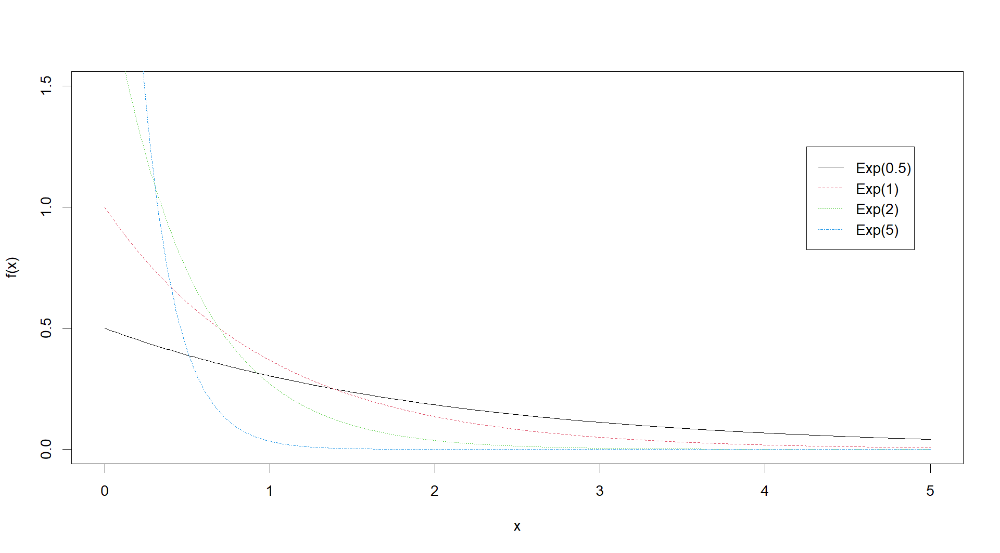
## 指数分布的概率密度函数
x <- seq(0, 5, 0.01)
plot(x, dexp(x, rate = 0.5), type = "l", col = 1, lty = 1,
xlab = "x", ylab = "f(x)")
lines(x, dexp(x, rate = 1), col = 2, lty = 2)
lines(x, dexp(x, rate = 2), col = 3, lty = 3)
lines(x, dexp(x, rate = 5), col = 4, lty = 4)import numpy as np
import matplotlib.pyplot as plt
from scipy import stats
x = np.linspace(0, 5, 500)
fig, ax = plt.subplots(figsize=(8, 5))
for rate, color, ls in [(0.5, 'C0', '-'), (1, 'C1', '--'),
(2, 'C2', '-.'), (5, 'C3', ':')]:
ax.plot(x, stats.expon.pdf(x, scale=1/rate), color=color, ls=ls,
label=f'rate={rate}')
ax.set_xlabel('x'); ax.set_ylabel('f(x)')
ax.set_title('指数分布概率密度函数'); ax.legend()
plt.tight_layout(); plt.show()data exponential;
do x = 0 to 5 by 0.01;
f1 = pdf('EXPONENTIAL', x, 0.5);
f2 = pdf('EXPONENTIAL', x, 1);
f3 = pdf('EXPONENTIAL', x, 2);
f4 = pdf('EXPONENTIAL', x, 5);
output;
end;
run;
title "指数分布概率密度函数";
proc sgplot data=exponential;
series x=x y=f1 / legendlabel="rate=0.5";
series x=x y=f2 / legendlabel="rate=1";
series x=x y=f3 / legendlabel="rate=2";
series x=x y=f4 / legendlabel="rate=5";
yaxis label="f(x)";
run;
title;1.3.2 伽马分布（Gamma distribution）
令 $\theta = 1/\lambda$，可重参数化为 $f(x) = \frac{1}{\Gamma(\alpha) \theta^\alpha} x^{\alpha-1} e^{-x/\theta}$，记为 $\text{Ga}(\alpha, \theta)$，$\theta$ 为尺度参数。
有限期望函数：$\mathbb{E}[(X \wedge d)^k] = \frac{\theta^k \gamma(\alpha + k, d/\theta)}{\Gamma(\alpha)} + d^k \left[1-\frac{\gamma(\alpha,d/\theta)}{\Gamma(\alpha)}\right]$。
性质
- 变异系数等于 $\alpha^{-0.5}$；当 $\alpha > 1$ 时，众数为 $(\alpha-1)\theta$。
- 伽马分布呈右偏（正偏）；当 $\alpha \to \infty$ 时，近似于正态分布。
- 固定尺度参数具有可加性：若 $X_1 \sim \text{Ga}(\alpha_1,\theta)$，$X_2 \sim \text{Ga}(\alpha_2,\theta)$ 独立，则 $X_1+X_2 \sim \text{Ga}(\alpha_1+\alpha_2,\theta)$。
- 伽马随机变量 $X$ 乘以常数 $r$ 后仍服从伽马分布，参数变为 $(\alpha, r\theta)$。
- 当 $\alpha = 1$ 时，伽马分布退化为指数分布。
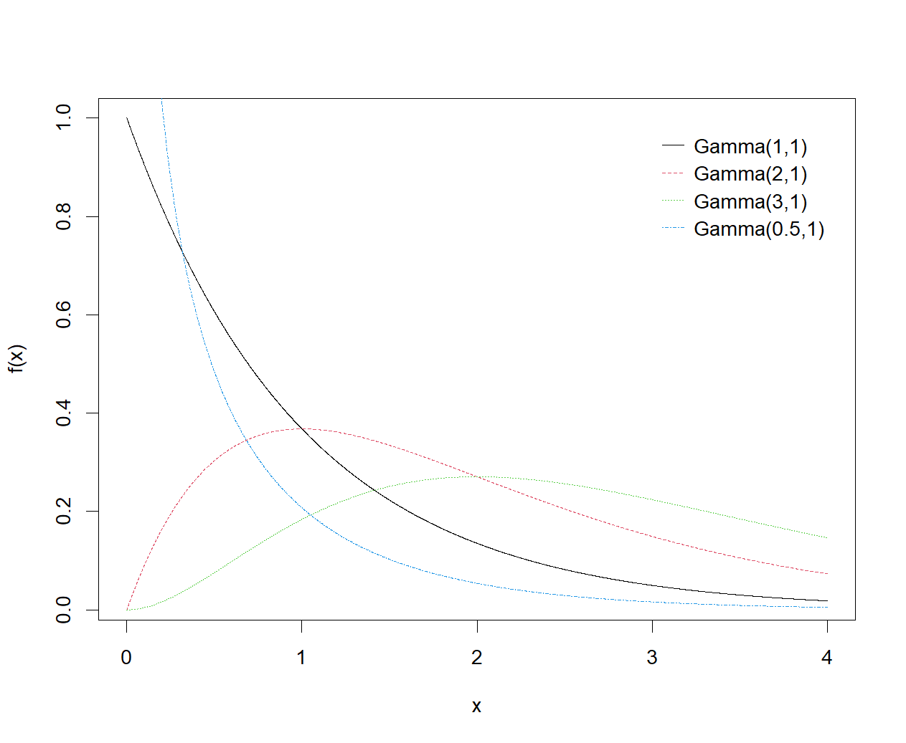
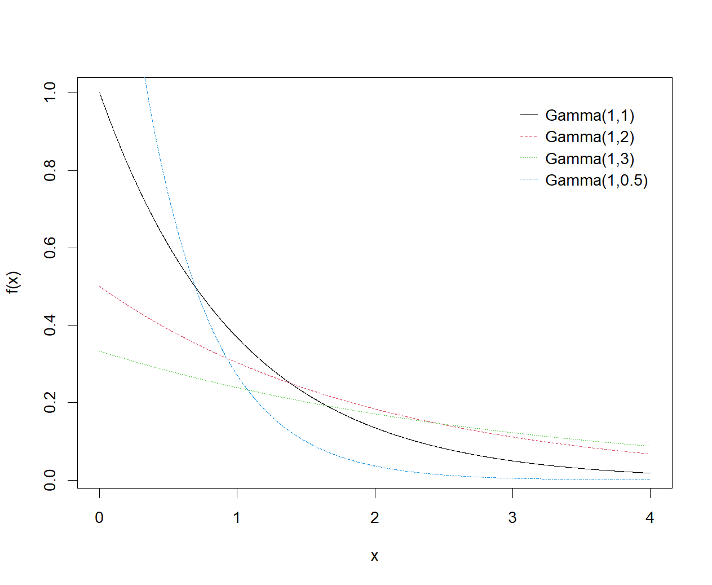
## 伽马分布概率密度函数：改变形状参数
x <- seq(0, 4, 0.001)
plot(x, dgamma(x, shape = 1, scale = 1), type = "l", col = 1, lty = 1,
xlab = "x", ylab = "f(x)")
lines(x, dgamma(x, shape = 2, scale = 1), col = 2, lty = 2)
lines(x, dgamma(x, shape = 3, scale = 1), col = 3, lty = 3)
lines(x, dgamma(x, shape = 0.5, scale = 1), col = 4, lty = 4)
## 伽马分布概率密度函数：改变尺度参数
plot(x, dgamma(x, shape = 1, scale = 1), type = "l", col = 1, lty = 1,
xlab = "x", ylab = "f(x)")
lines(x, dgamma(x, shape = 1, scale = 2), col = 2, lty = 2)
lines(x, dgamma(x, shape = 1, scale = 3), col = 3, lty = 3)
lines(x, dgamma(x, shape = 1, scale = 0.5), col = 4, lty = 4)import numpy as np
import matplotlib.pyplot as plt
from scipy import stats
x = np.linspace(0, 4, 1000)
fig, axes = plt.subplots(1, 2, figsize=(14, 5))
for shape, color, ls in [(1, 'C0', '-'), (2, 'C1', '--'),
(3, 'C2', '-.'), (0.5, 'C3', ':')]:
axes[0].plot(x, stats.gamma.pdf(x, shape, scale=1), color=color, ls=ls,
label=f'shape={shape}')
axes[0].set_xlabel('x'); axes[0].set_ylabel('f(x)')
axes[0].set_title('伽马分布（改变形状参数）'); axes[0].legend()
for scale, color, ls in [(1, 'C0', '-'), (2, 'C1', '--'),
(3, 'C2', '-.'), (0.5, 'C3', ':')]:
axes[1].plot(x, stats.gamma.pdf(x, 1, scale=scale), color=color, ls=ls,
label=f'scale={scale}')
axes[1].set_xlabel('x'); axes[1].set_ylabel('f(x)')
axes[1].set_title('伽马分布（改变尺度参数）'); axes[1].legend()
plt.tight_layout(); plt.show()data gamma_dist;
do x = 0 to 4 by 0.001;
f1 = pdf('GAMMA', x, 1);
f2 = pdf('GAMMA', x, 2);
f3 = pdf('GAMMA', x, 3);
f4 = pdf('GAMMA', x, 0.5);
output;
end;
run;
title "伽马分布（改变形状参数）";
proc sgplot data=gamma_dist;
series x=x y=f1 / legendlabel="shape=1";
series x=x y=f2 / legendlabel="shape=2";
series x=x y=f3 / legendlabel="shape=3";
series x=x y=f4 / legendlabel="shape=0.5";
yaxis label="f(x)";
run;
title;1.3.3 逆高斯分布（Inverse Gaussian distribution）
性质
- 变异系数为 $(\mu/\lambda)^{0.5}$，众数为 $\mu \left[(1+\frac{9\mu^2}{4\lambda^2})^{0.5} - \frac{3\mu}{2\lambda} \right]$。
- 当 $\lambda \to \infty$ 时，逆高斯分布近似于正态分布。
- 逆高斯分布呈右偏，尾部较伽马分布更厚。
- 逆高斯分布和伽马分布同属于广义逆高斯分布（GIG）的特例。
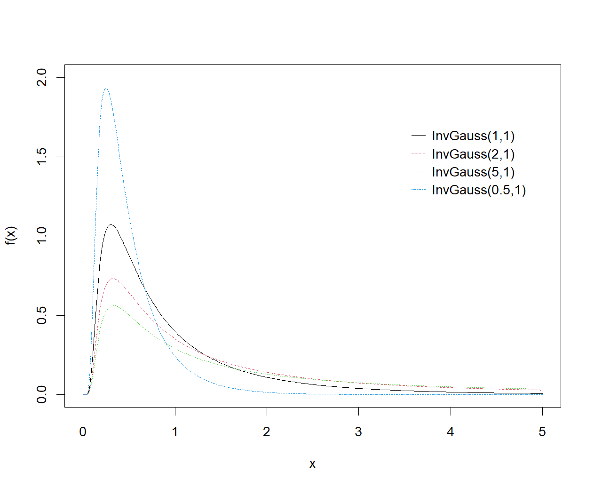
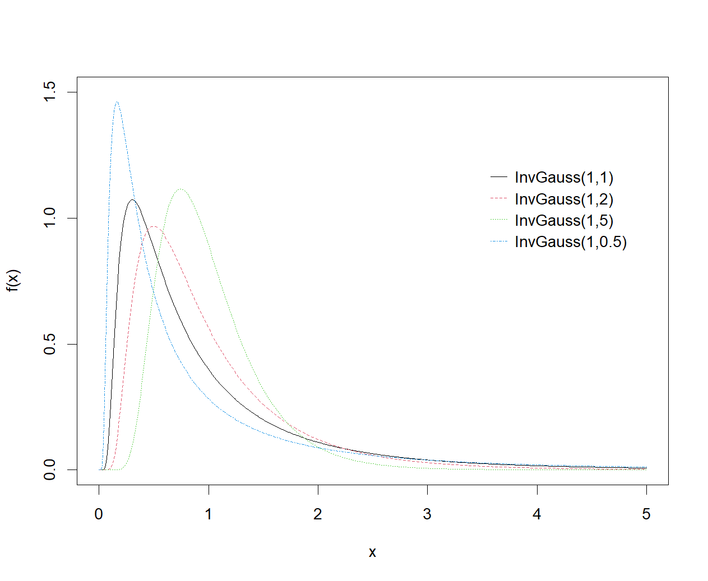
## 逆高斯分布概率密度函数（需 statmod 包）
x <- seq(0, 5, 0.01)
## 改变均值参数
plot(x, dinvgauss(x, mean = 1, shape = 1), type = "l", col = 1, lty = 1,
xlab = "x", ylab = "f(x)")
lines(x, dinvgauss(x, mean = 2, shape = 1), col = 2, lty = 2)
lines(x, dinvgauss(x, mean = 5, shape = 1), col = 3, lty = 3)
lines(x, dinvgauss(x, mean = 0.5, shape = 1), col = 4, lty = 4)
## 改变形状参数
plot(x, dinvgauss(x, mean = 1, shape = 1), type = "l", col = 1, lty = 1,
xlab = "x", ylab = "f(x)")
lines(x, dinvgauss(x, mean = 1, shape = 2), col = 2, lty = 2)
lines(x, dinvgauss(x, mean = 1, shape = 5), col = 3, lty = 3)
lines(x, dinvgauss(x, mean = 1, shape = 0.5), col = 4, lty = 4)import numpy as np
import matplotlib.pyplot as plt
from scipy import stats
x = np.linspace(0.01, 5, 500)
fig, axes = plt.subplots(1, 2, figsize=(14, 5))
# 改变均值参数
for mu, color, ls in [(1, 'C0', '-'), (2, 'C1', '--'),
(5, 'C2', '-.'), (0.5, 'C3', ':')]:
lam = 1
y = np.sqrt(lam/(2*np.pi*x**3)) * np.exp(-lam*(x-mu)**2/(2*mu**2*x))
axes[0].plot(x, y, color=color, ls=ls, label=f'mu={mu}')
axes[0].set_xlabel('x'); axes[0].set_ylabel('f(x)')
axes[0].set_title('逆高斯分布（改变均值）'); axes[0].legend()
# 改变形状参数
for lam, color, ls in [(1, 'C0', '-'), (2, 'C1', '--'),
(5, 'C2', '-.'), (0.5, 'C3', ':')]:
mu = 1
y = np.sqrt(lam/(2*np.pi*x**3)) * np.exp(-lam*(x-mu)**2/(2*mu**2*x))
axes[1].plot(x, y, color=color, ls=ls, label=f'shape={lam}')
axes[1].set_xlabel('x'); axes[1].set_ylabel('f(x)')
axes[1].set_title('逆高斯分布（改变形状）'); axes[1].legend()
plt.tight_layout(); plt.show()1.3.4 帕累托分布（Pareto distribution）
有限期望函数（$k=1$ 时）： $$\mathbb{E}[X \wedge d] = \begin{cases} \frac{\lambda}{\alpha-1} \left[ 1 - \left( \frac{\lambda}{\lambda+d} \right)^{\alpha-1} \right], & \alpha \neq 1 \\ -\lambda \ln \left( \frac{\lambda}{\lambda+d} \right), & \alpha = 1 \end{cases}$$
性质
- 变异系数为 $\sqrt{\frac{\alpha}{\alpha-2}}$，众数等于0。
- 帕累托分布呈右偏，是典型的厚尾分布。
- 尾部概率 $\text{P}(X>x)=\left(\frac{\lambda}{\lambda + x}\right)^\alpha$，衰减速度由 $\alpha$ 决定，故 $\alpha$ 又称尾部指数。
- 当 $\alpha$ 较小时，尾部概率衰减较慢，极端值出现概率相对较高，分布的高阶矩可能不存在。
帕累托分布对极端事件较为敏感，能够帮助保险公司评估和管理高风险事件的潜在大额损失（如飓风、洪水等巨灾事件）。
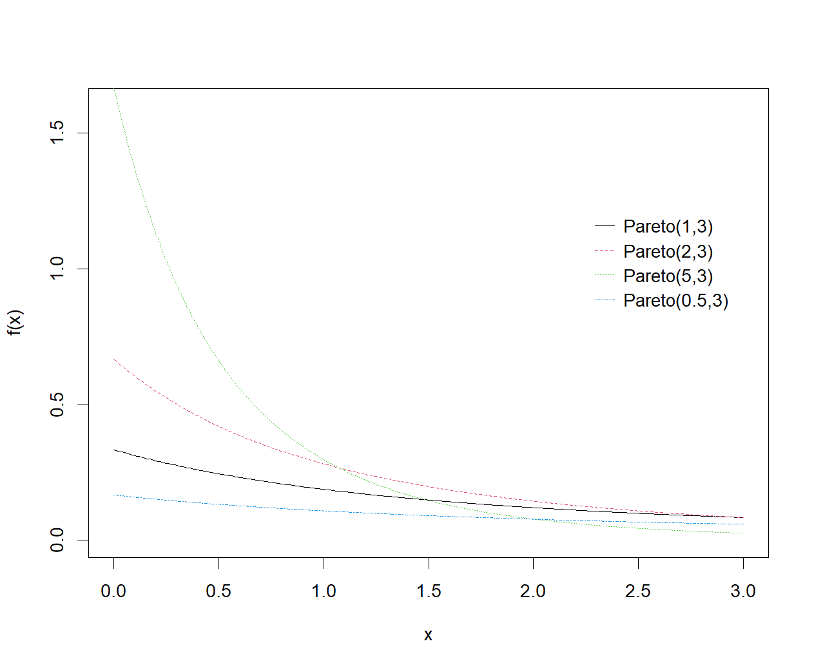
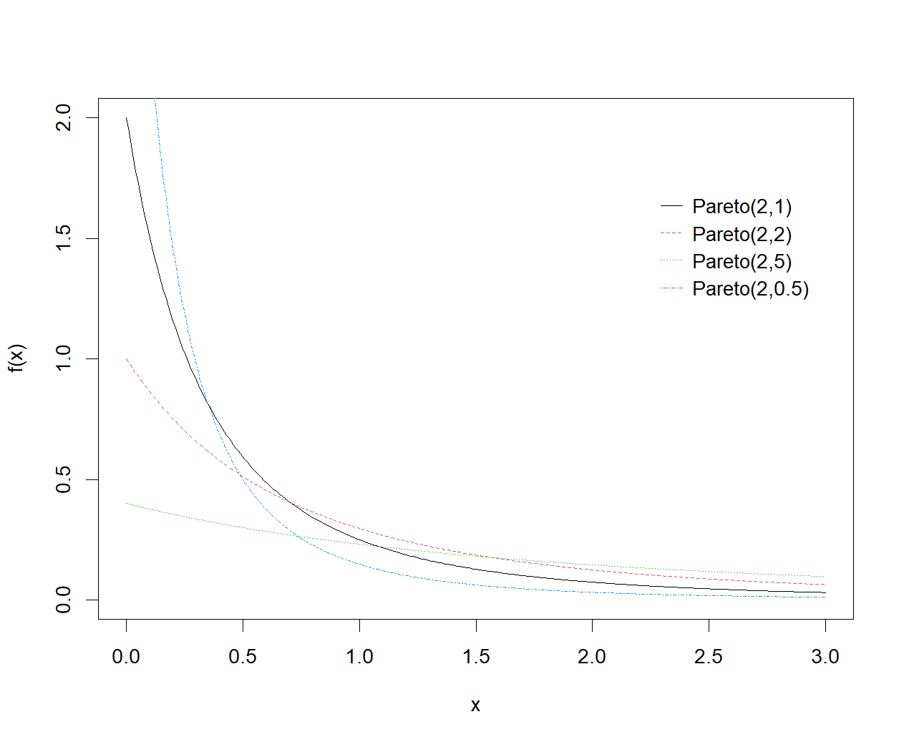
## 定义帕累托分布的概率密度函数
pareto.pdf <- function(x, alpha, lambda){
alpha * lambda^alpha / (lambda + x)^(alpha + 1)
}
## 帕累托分布概率密度函数：改变形状参数
x <- seq(0, 3, 0.01)
plot(x, pareto.pdf(x, alpha = 1, lambda = 3), type = "l", col = 1, lty = 1,
xlab = "x", ylab = "f(x)")
lines(x, pareto.pdf(x, alpha = 2, lambda = 3), col = 2, lty = 2)
lines(x, pareto.pdf(x, alpha = 5, lambda = 3), col = 3, lty = 3)
lines(x, pareto.pdf(x, alpha = 0.5, lambda = 3), col = 4, lty = 4)
## 帕累托分布概率密度函数：改变尺度参数
plot(x, pareto.pdf(x, alpha = 2, lambda = 1), type = "l", col = 1, lty = 1,
xlab = "x", ylab = "f(x)")
lines(x, pareto.pdf(x, alpha = 2, lambda = 2), col = 2, lty = 2)
lines(x, pareto.pdf(x, alpha = 2, lambda = 5), col = 3, lty = 3)
lines(x, pareto.pdf(x, alpha = 2, lambda = 0.5), col = 4, lty = 4)import numpy as np
import matplotlib.pyplot as plt
def pareto_pdf(x, alpha, lam):
return alpha * lam**alpha / (lam + x)**(alpha + 1)
x = np.linspace(0, 3, 300)
fig, axes = plt.subplots(1, 2, figsize=(14, 5))
for alpha, color, ls in [(1, 'C0', '-'), (2, 'C1', '--'),
(5, 'C2', '-.'), (0.5, 'C3', ':')]:
axes[0].plot(x, pareto_pdf(x, alpha, 3), color=color, ls=ls,
label=f'α={alpha}')
axes[0].set_xlabel('x'); axes[0].set_ylabel('f(x)')
axes[0].set_title('帕累托分布（改变形状参数）'); axes[0].legend()
for lam, color, ls in [(1, 'C0', '-'), (2, 'C1', '--'),
(5, 'C2', '-.'), (0.5, 'C3', ':')]:
axes[1].plot(x, pareto_pdf(x, 2, lam), color=color, ls=ls,
label=f'λ={lam}')
axes[1].set_xlabel('x'); axes[1].set_ylabel('f(x)')
axes[1].set_title('帕累托分布（改变尺度参数）'); axes[1].legend()
plt.tight_layout(); plt.show()/* SAS没有内置帕累托PDF，使用DATA步自定义 */
data pareto;
do x = 0 to 3 by 0.01;
f1 = 1 * 3**1 / (3 + x)**(1 + 1);
f2 = 2 * 3**2 / (3 + x)**(2 + 1);
f3 = 5 * 3**5 / (3 + x)**(5 + 1);
f4 = 0.5 * 3**0.5 / (3 + x)**(0.5 + 1);
output;
end;
run;
title "帕累托分布（改变形状参数）";
proc sgplot data=pareto;
series x=x y=f1 / legendlabel="alpha=1";
series x=x y=f2 / legendlabel="alpha=2";
series x=x y=f3 / legendlabel="alpha=5";
series x=x y=f4 / legendlabel="alpha=0.5";
yaxis label="f(x)";
run;
title;1.3.5 对数正态分布（Log-normal distribution）
若 $\ln X$ 服从正态分布 $\text{N}(\mu,\sigma^2)$，则 $X$ 服从对数正态分布，记为 $X \sim \text{LN}(\mu,\sigma^2)$。
性质
- 变异系数等于 $[\exp(\sigma^2) - 1]^{0.5}$，仅与 $\sigma$ 有关。众数为 $\exp(\mu-\sigma^2)$。
- 对数正态分布可通过正态分布的指数变换得到，正态分布可通过对数正态分布的对数变换得到。
- 对数正态分布呈右偏，尾部较伽马分布、逆高斯分布更厚。
- 均值和方差是参数 $(\mu,\sigma^2)$ 的增函数。固定 $\mu$，当 $\sigma \to 0$ 时，均值收敛于 $e^\mu$，方差收敛于0。
- 给定正实数 $r,t$，若 $X \sim \text{LN}(\mu,\sigma)$，则 $Y = rX^t$ 服从参数为 $(t\mu + \ln r, t^2 \sigma)$ 的对数正态分布。
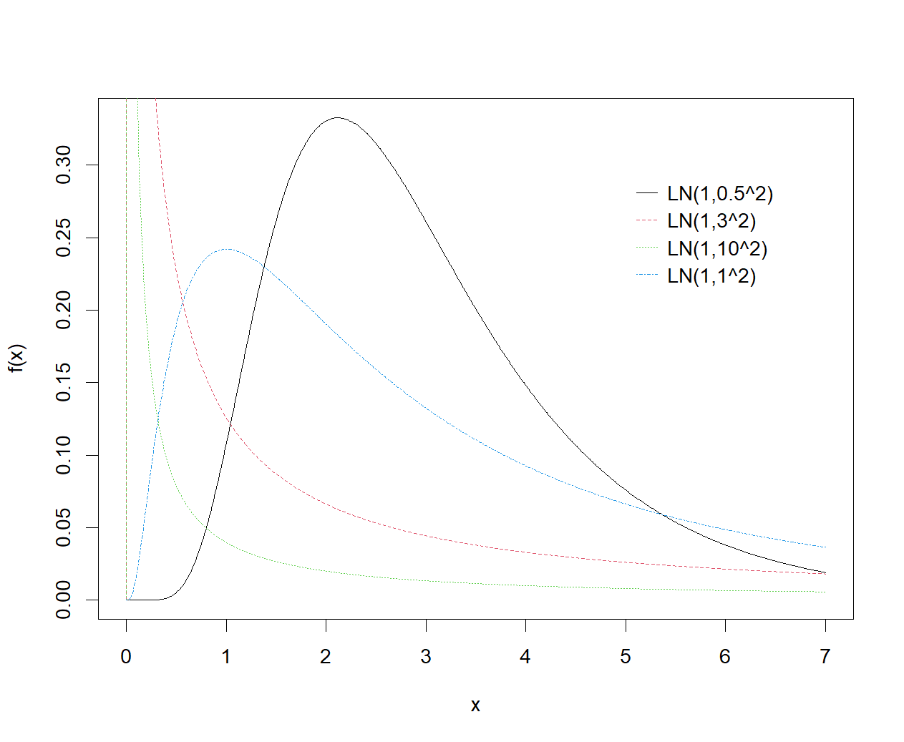
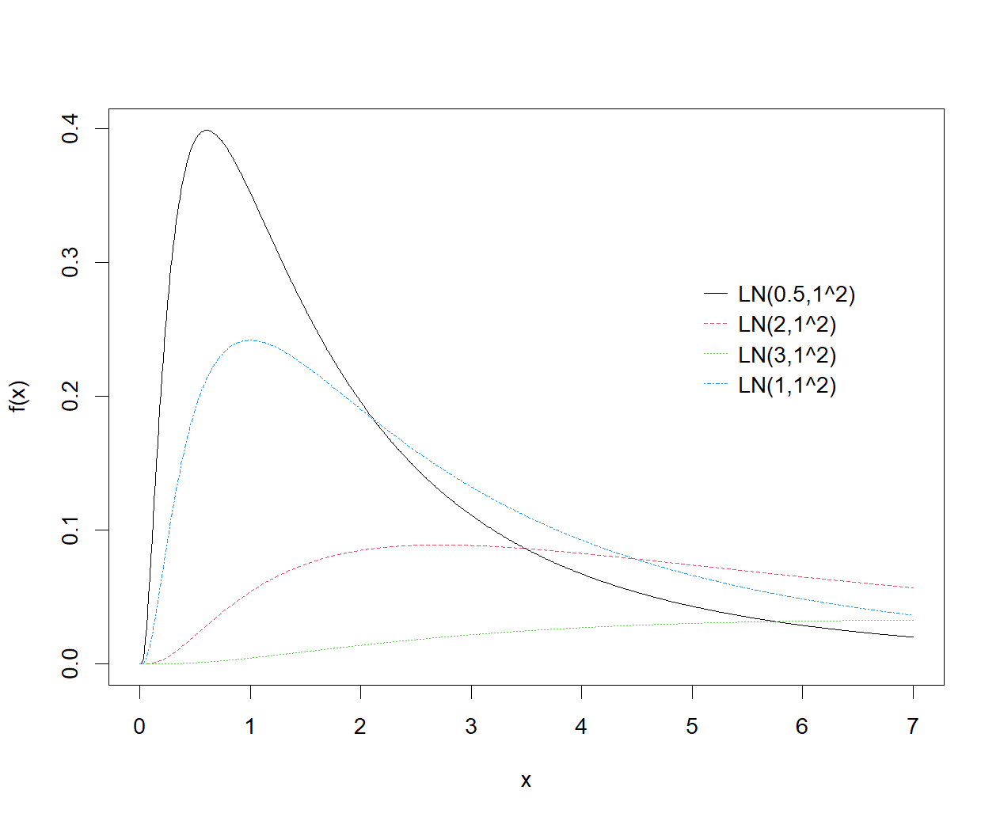
## 对数正态分布概率密度函数：改变均值参数
x <- seq(0, 7, 0.01)
plot(x, dlnorm(x, meanlog = 1, sdlog = 0.5), type = "l", col = 1, lty = 1,
xlab = "x", ylab = "f(x)")
lines(x, dlnorm(x, meanlog = 1, sdlog = 3), col = 2, lty = 2)
lines(x, dlnorm(x, meanlog = 1, sdlog = 10), col = 3, lty = 3)
lines(x, dlnorm(x, meanlog = 1, sdlog = 1), col = 4, lty = 4)
## 对数正态分布概率密度函数：改变方差参数
plot(x, dlnorm(x, meanlog = 1, sdlog = 0.5), type = "l", col = 1, lty = 1,
xlab = "x", ylab = "f(x)")
lines(x, dlnorm(x, meanlog = 1, sdlog = 3), col = 2, lty = 2)
lines(x, dlnorm(x, meanlog = 1, sdlog = 10), col = 3, lty = 3)
lines(x, dlnorm(x, meanlog = 1, sdlog = 1), col = 4, lty = 4)import numpy as np
import matplotlib.pyplot as plt
from scipy import stats
x = np.linspace(0, 7, 500)
fig, ax = plt.subplots(figsize=(8, 5))
for sdlog, color, ls in [(0.5, 'C0', '-'), (1, 'C1', '--'),
(3, 'C2', '-.'), (10, 'C3', ':')]:
ax.plot(x, stats.lognorm.pdf(x, s=sdlog, scale=np.exp(1)),
color=color, ls=ls, label=f'sdlog={sdlog}')
ax.set_xlabel('x'); ax.set_ylabel('f(x)')
ax.set_title('对数正态分布'); ax.legend()
plt.tight_layout(); plt.show()data lognormal;
do x = 0 to 7 by 0.01;
f1 = pdf('LOGNORMAL', x, 1, 0.5);
f2 = pdf('LOGNORMAL', x, 1, 1);
f3 = pdf('LOGNORMAL', x, 1, 3);
f4 = pdf('LOGNORMAL', x, 1, 10);
output;
end;
run;
title "对数正态分布";
proc sgplot data=lognormal;
series x=x y=f1 / legendlabel="sdlog=0.5";
series x=x y=f2 / legendlabel="sdlog=1";
series x=x y=f3 / legendlabel="sdlog=3";
series x=x y=f4 / legendlabel="sdlog=10";
yaxis label="f(x)";
run;
title;1.3.6 威布尔分布（Weibull distribution）
威布尔分布可认为是对指数分布的推广。当 $\tau=1$ 时，威布尔分布等价于指数分布；通常取 $0<\tau<1$，此时威布尔分布的尾部较指数分布更厚。
性质
- 当 $\tau \leq 1$ 时，众数等于0；当 $\tau > 1$ 时，众数为 $\theta\left(\frac{\tau-1}{\tau}\right)^{1/\tau}$。
- 若 $X \sim \text{W}(\tau,\theta)$，则 $rX \sim \text{W}(\tau, r\theta)$。
- 威布尔分布属于广义指数分布。
- 威布尔分布在 $\tau = 3.6$ 时近似对称，$\tau > 3.6$ 时右偏，$\tau < 3.6$ 时左偏。
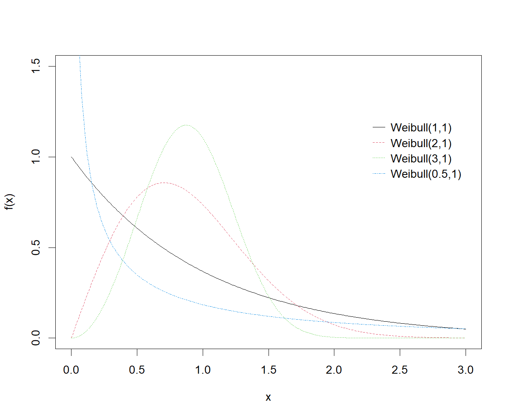
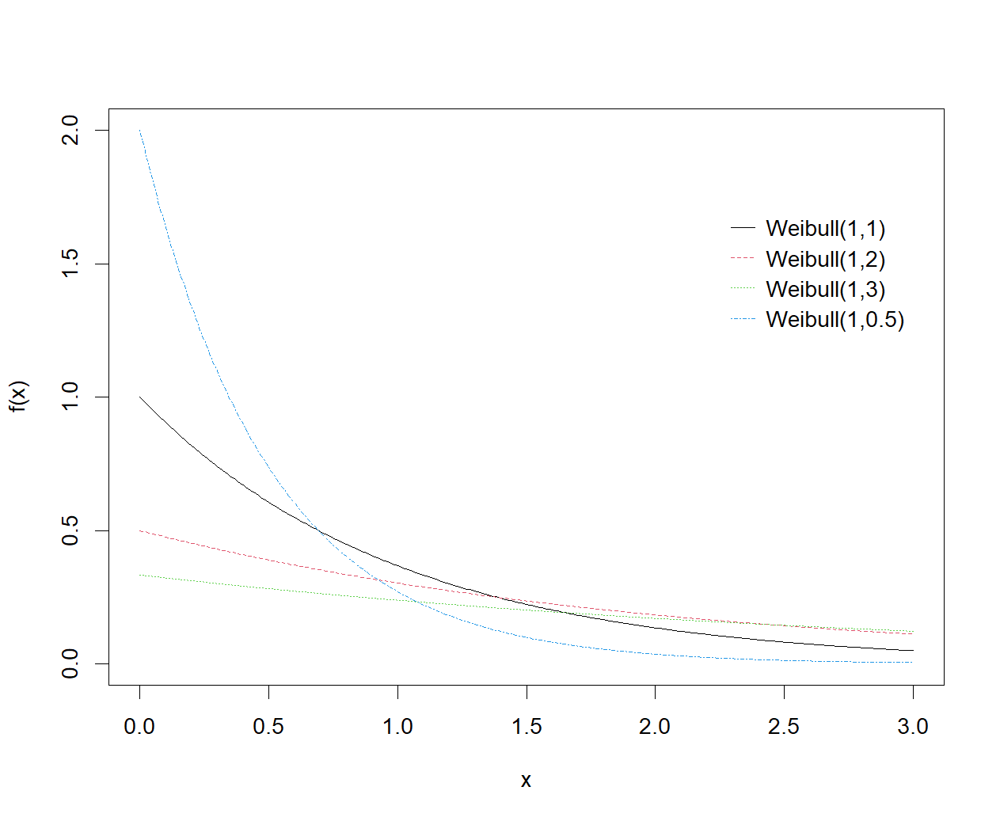
## 威布尔分布概率密度函数：改变形状参数
x <- seq(0, 3, 0.01)
plot(x, dweibull(x, shape = 1, scale = 1), type = "l", col = 1, lty = 1,
xlab = "x", ylab = "f(x)")
lines(x, dweibull(x, shape = 2, scale = 1), col = 2, lty = 2)
lines(x, dweibull(x, shape = 3, scale = 1), col = 3, lty = 3)
lines(x, dweibull(x, shape = 0.5, scale = 1), col = 4, lty = 4)
## 威布尔分布概率密度函数：改变尺度参数
plot(x, dweibull(x, shape = 1, scale = 1), type = "l", col = 1, lty = 1,
xlab = "x", ylab = "f(x)")
lines(x, dweibull(x, shape = 1, scale = 2), col = 2, lty = 2)
lines(x, dweibull(x, shape = 1, scale = 3), col = 3, lty = 3)
lines(x, dweibull(x, shape = 1, scale = 0.5), col = 4, lty = 4)import numpy as np
import matplotlib.pyplot as plt
from scipy import stats
x = np.linspace(0, 3, 500)
fig, axes = plt.subplots(1, 2, figsize=(14, 5))
for shape, color, ls in [(1, 'C0', '-'), (2, 'C1', '--'),
(3, 'C2', '-.'), (0.5, 'C3', ':')]:
axes[0].plot(x, stats.weibull_min.pdf(x, shape, scale=1),
color=color, ls=ls, label=f'shape={shape}')
axes[0].set_xlabel('x'); axes[0].set_ylabel('f(x)')
axes[0].set_title('威布尔分布（改变形状参数）'); axes[0].legend()
for scale, color, ls in [(1, 'C0', '-'), (2, 'C1', '--'),
(3, 'C2', '-.'), (0.5, 'C3', ':')]:
axes[1].plot(x, stats.weibull_min.pdf(x, 1, scale=scale),
color=color, ls=ls, label=f'scale={scale}')
axes[1].set_xlabel('x'); axes[1].set_ylabel('f(x)')
axes[1].set_title('威布尔分布（改变尺度参数）'); axes[1].legend()
plt.tight_layout(); plt.show()data weibull;
do x = 0 to 3 by 0.01;
f1 = pdf('WEIBULL', x, 1, 1);
f2 = pdf('WEIBULL', x, 2, 1);
f3 = pdf('WEIBULL', x, 3, 1);
f4 = pdf('WEIBULL', x, 0.5, 1);
output;
end;
run;
title "威布尔分布（改变形状参数）";
proc sgplot data=weibull;
series x=x y=f1 / legendlabel="shape=1";
series x=x y=f2 / legendlabel="shape=2";
series x=x y=f3 / legendlabel="shape=3";
series x=x y=f4 / legendlabel="shape=0.5";
yaxis label="f(x)";
run;
title;1.3.7 常见连续型分布与广义伽马、贝塔分布间的关系
在非寿险精算模型中，理解常见连续型分布与广义伽马分布（GG）、广义贝塔分布（GB）之间的关系非常重要。广义伽马分布和广义贝塔分布可以看作是分布族中的"母分布"，许多常见分布都是它们的特例。
许多常见分布是广义伽马分布的特例：
- 指数分布：当 $p = d = 1$ 时。
- 伽马分布：当 $p = 1$ 时。
- 威布尔分布：当 $d = p$ 时。
广义伽马分布是GB2的极限情况：$\text{GG}(a,\beta,p) = \lim_{q \to \infty} \text{GB2}(a,b=q^{1/a}\beta,p,q)$。
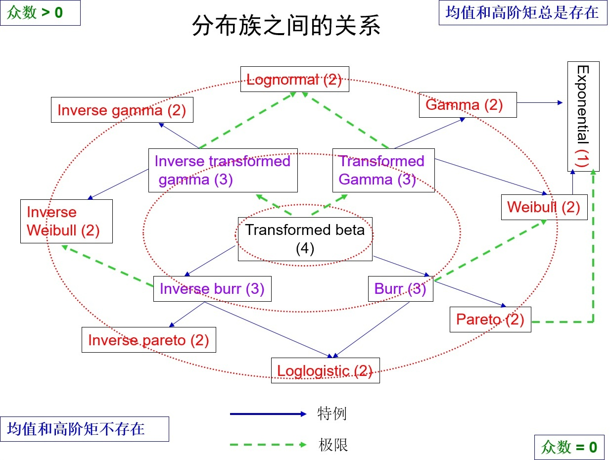
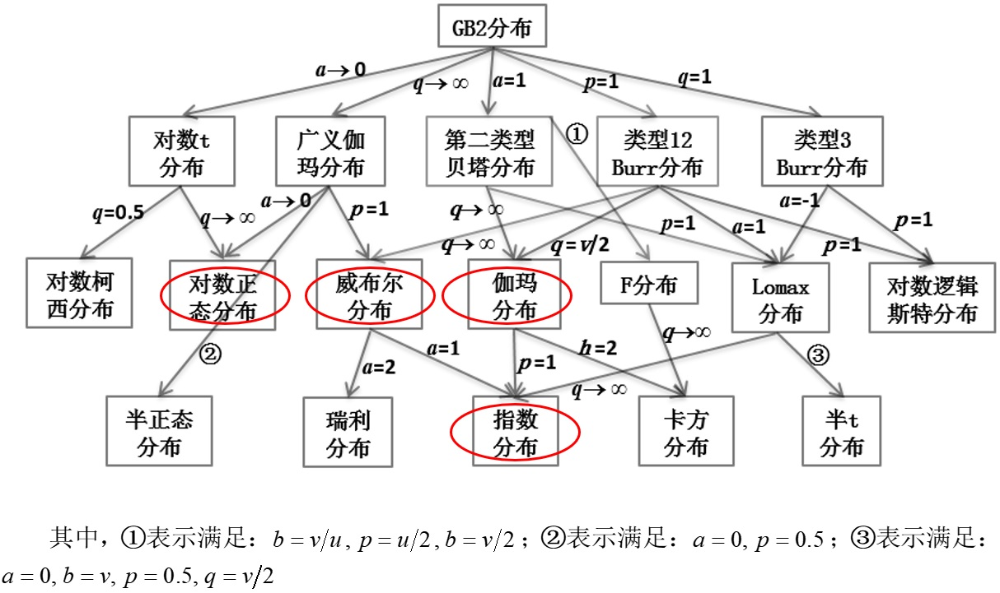
1.4 损失分布的变换
在非寿险精算中，对数变换和指数变换是两种常见的随机变量变换方式。这些变换常用于调整数据的分布形态，使其更符合分析模型的假设要求。
1.4.1 对数变换和指数变换
对数变换是一种常用的非线性变换，对随机变量 $X$ 取对数，得到新的随机变量 $Y = \ln(X)$。根据概率密度函数的变换公式：
考虑对数变换的逆变换 $X = e^Y$，易解得 $\frac{dx}{dy} = e^y$，代入上式可知 $Y$ 的密度函数为：
$Y$ 的分布函数可以通过定义直接求解：$F_Y(y) = \text{P}(Y \leq y) = \text{P}(\ln X \leq y) = \text{P}(X \leq e^y) = F_X(e^y)$。
已知 $f_X(x) = \lambda e^{-\lambda x},\ x \geq 0$，代入密度函数变换公式，可得 $Y$ 的概率密度函数为：
注意，随机变量 $Y$ 的取值范围为 $y \in \mathbb{R}$。该结果表明，对数变换可以将原本定义在非负实数上的随机变量转换为定义在整个实数轴上的随机变量。
指数变换也有类似结果。记 $X$ 为原始的随机变量，经过指数变换可以得到新的随机变量 $Y = e^X$。若 $X$ 具有密度函数和分布函数 $f_X(\cdot), F_X(\cdot)$，则 $Y$ 的分布满足：
由前所述，正态分布经过指数变换可以得到对数正态分布，而对数正态分布经过对数变换可以得到正态分布。
1.4.2 组合分布（composite distribution）
组合分布泛指一类通过对多个分布进行拼接得到的复杂分布类，通常被用于描述具有多重特性的数据（例如损失中既存在大量小额赔付，又存在大额极端赔付的情况）。其核心思想是用不同的分布分别刻画不同区间的数据，再将它们组合在一起形成一个整体分布。
为使组合分布的密度函数在分界点处保持连续，可以添加条件：$p_i \frac{f_i(c_i)}{A_i} = p_{i+1} \frac{f_{i+1}(c_i)}{A_{i+1}}$。若令 $f'(c_i^-) = f'(c_i^+)$，可进一步增强光滑性。在某些简化情况下，也可以放宽连续性要求，此时被称为剪接模型（splicing models）。
已知三种分布的概率密度函数分别为：$f_1(x) = e^{-x}$，$f_2(x) = xe^{-x}$，$f_3(x) = \frac{8}{(x+2)^3}$。
首先计算每个区间内的积分 $A_i$：
为使组合分布的密度函数连续，需要解以下方程组：
最终解得权重值：$p_1 \approx 0.7640$，$p_2 \approx 0.1389$，$p_3 \approx 0.0971$。
因此，新的组合分布可以表示为：
1.4.3 混合分布（mixture distribution）
混合是另一种构造复杂分布的方法，通过将多个不同的分布按照一定的权重进行加权，得到新的分布。混合分布由若干个"成分分布"构成，每个成分的贡献通过相应的权重控制。在非寿险精算中，混合分布常用于刻画具有异质性的损失数据。
## 定义混合分布的概率密度函数
f <- function(x){
0.3 * dlnorm(x, meanlog = 1, sdlog = 2) + 0.7 * dlnorm(x, meanlog = 3, sdlog = 4)
}
curve(f, xlim = c(0, 1), ylim = c(0, 2), lty = 1, lwd = 2, col = 2)
curve(dlnorm(x, meanlog = 1, sdlog = 2), lty = 2, add = TRUE)
curve(dlnorm(x, meanlog = 3, sdlog = 4), lty = 3, add = TRUE)import numpy as np
import matplotlib.pyplot as plt
from scipy import stats
x = np.linspace(0.001, 1, 1000)
f_mix = 0.3 * stats.lognorm.pdf(x, s=2, scale=np.exp(1)) + \
0.7 * stats.lognorm.pdf(x, s=4, scale=np.exp(3))
f1 = stats.lognorm.pdf(x, s=2, scale=np.exp(1))
f2 = stats.lognorm.pdf(x, s=4, scale=np.exp(3))
fig, ax = plt.subplots(figsize=(8, 5))
ax.plot(x, f_mix, 'r-', lw=2, label='混合分布')
ax.plot(x, f1, 'b--', label='LN(1,2)')
ax.plot(x, f2, 'g-.', label='LN(3,4)')
ax.set_xlabel('x'); ax.set_ylabel('f(x)')
ax.set_title('混合分布'); ax.legend()
ax.set_ylim(0, 2)
plt.tight_layout(); plt.show()/* 例1.4：混合分布的概率密度函数 */
data mixture;
do x = 0 to 1 by 0.001;
f_mix = 0.3 * pdf('LOGNORMAL', x, 1, 2) + 0.7 * pdf('LOGNORMAL', x, 3, 4);
f1 = pdf('LOGNORMAL', x, 1, 2);
f2 = pdf('LOGNORMAL', x, 3, 4);
output;
end;
run;
title "混合分布的概率密度函数";
proc sgplot data=mixture;
series x=x y=f_mix / legendlabel="混合分布" lineattrs=(thickness=2 color=red);
series x=x y=f1 / legendlabel="LN(1,2)";
series x=x y=f2 / legendlabel="LN(3,4)";
yaxis label="f(x)" min=0 max=2;
run;
title;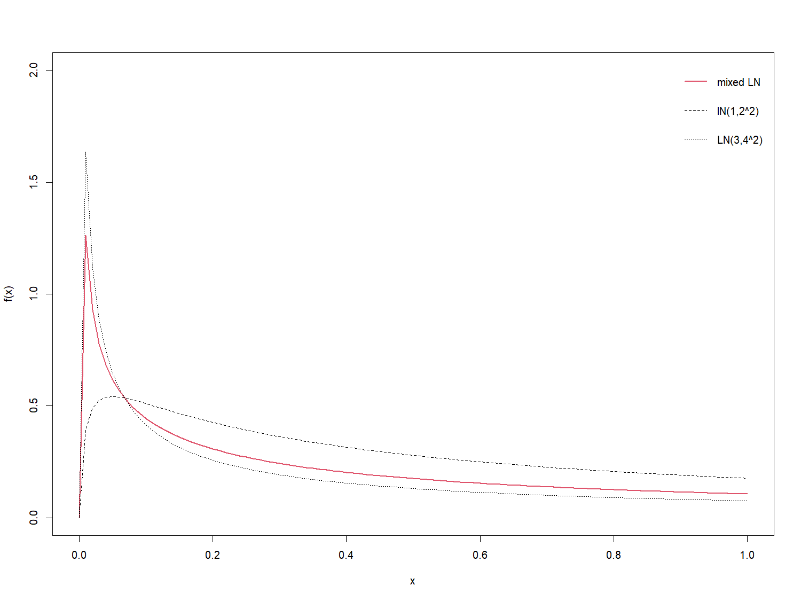
对混合分布进行推广。假设 $X$ 的分布形状与参数值 $\Theta$ 有关，$\Theta$ 是一个离散型随机变量，概率分布为 $\text{P}(\Theta = \theta_i) = \omega_i$，则 $X$ 的分布可以表示为：
当参数 $\Theta$ 为连续型随机变量且具有概率密度函数 $f_\Theta(\theta)$ 时，$X$ 的分布可用积分表示为：$f_X(x) = \int_{-\infty}^\infty f_\Theta(\theta) f_{X\vert\Theta}(x\vert\theta) d\theta$。
记 $X$ 表示保单组合中的某个个体的损失，由此产生的损失分布即为混合分布，相应的概率密度函数为：
整理被积函数为 $\text{Ga}(\alpha + 1, x+\delta)$ 分布的形式：
积分结果等于1，因此得到：
上式为帕累托分布 $\text{Pa}(\alpha, \delta)$ 的概率密度函数。即如果损失服从参数为 $\lambda$ 的指数分布，并且 $\lambda \sim \text{Ga}(\alpha,\delta)$，则混合后的损失分布就是 $\text{Pa}(\alpha, \delta)$。
对于一般的 $k$，可类似求得 $X$ 的概率密度函数为：
将被积函数整理成 $\text{Ga}(\alpha+k, x+\delta)$ 分布的形式，积分结果等于1，因此得到：
上式为广义帕累托分布 $\text{Pa}(\alpha, \delta, k)$ 的概率密度函数。
典型的混合分布还包括泊松-伽马混合分布，即假设泊松分布的参数 $\lambda$ 服从伽马分布，混合后的结果为负二项分布。
1.5 分布拟合与参数估计
在分布拟合中，问题可以表述为：假定随机变量 $X$ 服从某分布 $F(x;\theta)$，其中 $\theta$ 是分布中的未知参数。若已知 $(X_1, X_2, \dots, X_n)$ 是来自该分布的一组简单随机样本，需要从数据中估计参数值 $\hat{\theta}$。
1.5.1 矩估计
矩估计法（moment estimation，ME）是一种通过样本矩近似总体矩来估计分布参数的方法。给定一组样本 $(x_1, x_2, \dots, x_n)$，分布的样本矩可以计算为：
若分布的参数 $\theta$ 可以表示为某些总体矩的函数 $\theta = g(\mu_1',\cdots,\mu_r'; \mu_2,\cdots,\mu_s)$，通过计算对应的样本矩，并用其替代参数中的总体矩，得到估计量 $\hat{\theta} = g(\hat{\mu}_1',\cdots,\hat{\mu}_r'; \hat{\mu}_1,\cdots,\hat{\mu}_s)$，称为参数 $\theta$ 的矩估计量。
例如对伽马分布 $\text{Ga}(\alpha,\theta)$，用样本均值 $\bar{x}$ 替代数学期望、用样本方差 $s_n^2$ 替代方差，即可得到关系：
1.5.2 极大似然估计
1. 似然函数与极大似然思想
极大似然估计法（maximum likelihood estimation，MLE）是一种通过最大化样本数据的似然函数来估计分布参数的方法。当样本观察值已知、而模型参数 $\boldsymbol{\theta}$ 未知时，似然函数为：
极大似然法是对似然函数求极大化，即 $\hat{\boldsymbol{\theta}} = \arg\max_{\boldsymbol{\theta} \in \Theta} L(\boldsymbol{\theta})$。对于单参数场景，若 $l(\theta)$ 可以对参数 $\theta$ 求导，则极大似然估计 $\hat{\theta}$ 应满足 $\frac{\mathrm{d}}{\mathrm{d} \theta}l(\hat{\theta}) = 0$。
记 $X_1, X_2, \ldots, X_n$ 表示个体维修费用（$n=1000$），$X_i \sim \text{Exp}(\lambda)$。似然函数为：
对数似然函数：$\ln L = n\ln \lambda - \lambda n\bar{x}$。求导并令导函数等于0：
因此，平均成本的极大似然估计为 $1/\hat{\lambda} = 2200$，恰好等于样本均值。
以下给出了应用R软件 fitdistrplus 程序包拟合伽马分布的过程。
set.seed(123) # 设置随机种子以保证结果可重复
x <- rgamma(100, 2, 2.5) # 从Ga(2, 2.5)中抽取100个随机数
## 极大似然法估计参数
fit1 <- fitdist(x, 'gamma', method = 'mle')
fit1 # 形状参数估计值约为2.19，速率参数估计值约为3.18
plot(fit1)
## 矩估计法估计参数
fit2 <- fitdist(x, 'gamma', method = 'mme')
## 分位数法估计参数
fit3 <- fitdist(x, 'gamma', method = 'qme', probs = c(1/3, 2/3))
## 最小距离法估计参数
fit4 <- fitdist(x, 'gamma', method = 'mge', gof = 'CvM')
summary(fit1)import numpy as np
import matplotlib.pyplot as plt
from scipy import stats
np.random.seed(123)
x = np.random.gamma(shape=2, scale=1/2.5, size=100)
# MLE
shape_mle, loc_mle, scale_mle = stats.gamma.fit(x, floc=0)
print(f"伽马分布MLE: shape={shape_mle:.4f}, scale={scale_mle:.4f}, rate={1/scale_mle:.4f}")
# 矩估计
xbar = np.mean(x)
s2 = np.var(x, ddof=1)
shape_mme = xbar**2 / s2
scale_mme = s2 / xbar
print(f"伽马分布MME: shape={shape_mme:.4f}, scale={scale_mme:.4f}")
# 绘图
fig, ax = plt.subplots(figsize=(8, 5))
ax.hist(x, bins=20, density=True, alpha=0.5, label='数据')
xx = np.linspace(0, max(x), 200)
ax.plot(xx, stats.gamma.pdf(xx, shape_mle, scale=scale_mle),
'r-', lw=2, label='MLE拟合')
ax.plot(xx, stats.gamma.pdf(xx, shape_mme, scale=scale_mme),
'b--', lw=2, label='MME拟合')
ax.set_xlabel('x'); ax.set_ylabel('f(x)')
ax.set_title('伽马分布拟合'); ax.legend()
plt.tight_layout(); plt.show()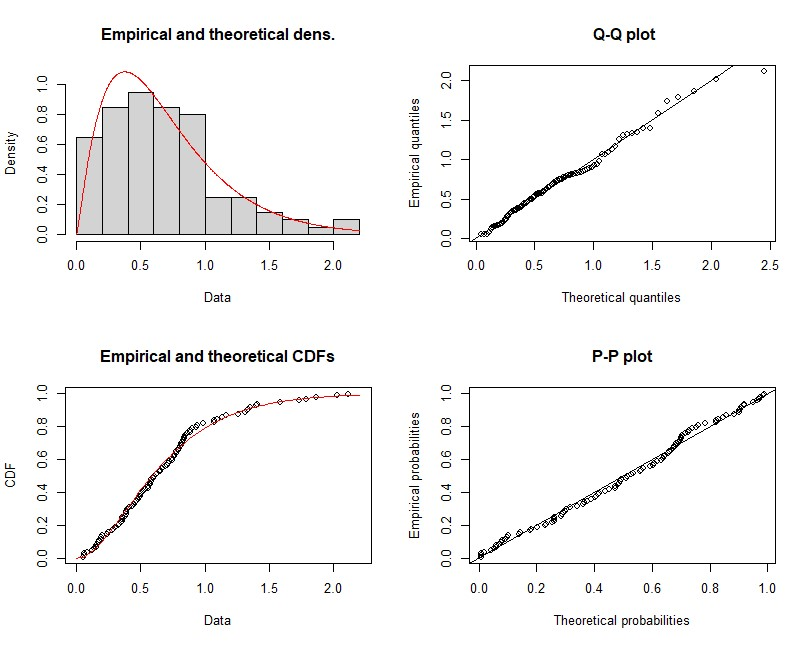
上图展示了四种统计图形，通常用于评估数据与特定理论分布的拟合程度：
- 经验与理论密度函数图：直方图表示样本数据的经验分布，红线表示拟合的理论概率密度函数。若两者形状接近，表明拟合效果较好。
- 分位数-分位数图（Q-Q图）：理论分布的分位数与实际数据的分位数对比。若数据点近似呈对角线，表明拟合的效果较好。
- 经验与理论累积分布函数图：实际数据的经验CDF与拟合的理论CDF对比。若两条曲线相互重叠，表明拟合的效果较好。
- 概率-概率图（P-P图）：理论分布的累积概率与实际数据的累积概率对比。若数据点近似呈对角线，表明拟合的效果较好。
根据威布尔的分布函数，可建立关于 $c$ 和 $\gamma$ 的方程组：
解得参数的百分位数估计值 $\tilde{\gamma} = 0.8038$，$\tilde{c} = 0.002326$。注意 $\tilde{\gamma} < 1$，表明此时具有比指数分布更厚的尾部。
2. 极大似然估计的方差
若 $f(x; \theta)$ 满足正则条件，则当 $n \to \infty$ 时，参数的极大似然估计量 $\hat{\theta}_n$ 渐进服从正态分布 $\text{N}(\theta, [I(\theta)]^{-1})$。其中 $I(\theta)$ 称为 Fisher信息量：
当待估参数个数大于1时，极大似然估计量渐进服从多元正态分布，协方差矩阵等于Fisher信息矩阵的逆。
3. 置信区间
当极大似然估计量 $\hat{\boldsymbol{\theta}}$ 渐进服从正态分布时，可以为每个参数 $\theta_j$ 构造独立的置信区间，例如置信水平 $100(1-\alpha)\%$ 的区间为 $\hat{\theta}_j \pm z_{1-\alpha/2} \cdot \sqrt{\text{Var}(\hat{\theta}_j)}$。基于似然的方法，可构造置信域 $\{\boldsymbol{\theta}: l(\boldsymbol{\theta}) \geq c\}$，其中 $c = l(\hat{\boldsymbol{\theta}}) - 0.5 \cdot \chi_{1-\alpha}^2(r)$。
1.5.3 拟合优度检验
1. 卡方拟合优度检验
卡方拟合优度检验主要思想是将数据分组后，比较每组观测频率与理论频率的差异。原假设为 $H_0$：随机变量 $X$ 的分布为 $F(x;\theta)$。
将实数轴划分为若干个子区间 $(c_{j-1},c_j]$，应用分布函数计算理论概率 $p_j = F(c_j; \hat{\theta}) - F(c_{j-1}; \hat{\theta})$，理论频数 $E_j = np_j$。记 $O_j$ 为落入各区间的样本数量，则卡方检验统计量为：
当样本量 $n$ 足够大时，检验统计量应收敛于自由度 $k = r-1-m$ 的卡方分布（$m$ 为需要估计的参数个数）。需要注意，卡方拟合优度检验要求每个区间的期望频数 $E_j \geq 5$。
| 维修费用区间 | 频数 |
|---|---|
| $(0, 1000]$ | 250 |
| $(1000, 2000]$ | 300 |
| $(2000, 3000]$ | 250 |
| $(3000, 4000]$ | 150 |
| $(4000, 5000]$ | 100 |
| $(5000, \infty)$ | 0 |
假设维修费用服从指数分布，利用估计值 $\hat{\lambda} = 1/2200$，可以计算每个区间上的理论概率。例如，个体观察值落入区间 $(2000,3000]$ 的概率为：
该区间的理论频数为 $1000 \times 0.1472 = 147.2$。其他区间的理论频数分别为：365.3, 231.8, 147.2, 93.4, 59.3, 103.0。
计算卡方统计量：
总共6个区间，存在1个待估参数，故检验统计量的自由度应为 $6-1-1=4$。而卡方检验统计量的值远大于14.86（自由度为4的卡方分布的99.5%分位数），故有很大把握拒绝原假设 $H_0$，认为维修成本不服从指数分布。
## 卡方拟合优度检验：维修费用数据
lower <- c(0, 1000, 2000, 3000, 4000, 5000)
upper <- c(1000, 2000, 3000, 4000, 5000, Inf)
freq <- c(250, 300, 250, 150, 100, 0)
## 指数分布的极大似然估计
f1 <- function(a) {-sum(freq * log(pexp(upper, a) - pexp(lower, a)))}
m1 <- optimize(f1, c(1e-5, 1e-3))
## 计算理论分布
q <- pexp(upper, m1$minimum) - pexp(lower, m1$minimum)
n <- sum(freq) * q
## 作卡方检验
chisq.test(freq, p = q)
## 泊松分布拟合检验
X <- 0:6
Y <- c(7, 10, 12, 8, 3, 2, 0)
q <- ppois(X, mean(rep(X, Y)))
n <- length(Y)
p <- rep(0, n)
p[1] <- q[1]
p[n] <- 1 - q[n-1]
for (i in 2:(n-1)) {
p[i] <- q[i] - q[i-1]
}
chisq.test(Y, p = p)import numpy as np
from scipy import stats
# 卡方拟合优度检验：维修费用数据
lower = np.array([0, 1000, 2000, 3000, 4000, 5000])
upper = np.array([1000, 2000, 3000, 4000, 5000, np.inf])
freq = np.array([250, 300, 250, 150, 100, 0])
# 指数分布MLE
midpoints = np.array([500, 1500, 2500, 3500, 4500, 5500])
n_total = freq.sum()
xbar = np.sum(freq * midpoints) / n_total
lambda_hat = 1 / xbar
# 期望频数
p_exp = stats.expon.cdf(upper, scale=1/lambda_hat) - \
stats.expon.cdf(lower, scale=1/lambda_hat)
exp_freq = n_total * p_exp
# 卡方统计量
chi_sq = np.sum((freq - exp_freq)**2 / exp_freq)
df = len(freq) - 1 - 1
p_value = 1 - stats.chi2.cdf(chi_sq, df)
print(f"卡方拟合优度检验（指数分布）:")
print(f" lambda_hat = {lambda_hat:.6f}")
print(f" chi_sq = {chi_sq:.4f}, df = {df}, p-value = {p_value:.4f}")
# 泊松分布检验
X = np.arange(0, 7)
Y = np.array([7, 10, 12, 8, 3, 2, 0])
lambda_hat_pois = np.sum(X * Y) / np.sum(Y)
p_pois = np.zeros(len(Y))
p_pois[0] = stats.poisson.cdf(0, lambda_hat_pois)
p_pois[-1] = 1 - stats.poisson.cdf(len(Y)-2, lambda_hat_pois)
for i in range(1, len(Y)-1):
p_pois[i] = stats.poisson.cdf(X[i], lambda_hat_pois) - \
stats.poisson.cdf(X[i]-1, lambda_hat_pois)
exp_freq_pois = np.sum(Y) * p_pois
chi_sq_pois = np.sum((Y - exp_freq_pois)**2 / exp_freq_pois)
df_pois = len(Y) - 1 - 1
p_value_pois = 1 - stats.chi2.cdf(chi_sq_pois, df_pois)
print(f"\n卡方拟合优度检验（泊松分布）:")
print(f" lambda_hat = {lambda_hat_pois:.4f}")
print(f" chi_sq = {chi_sq_pois:.4f}, df = {df_pois}, p-value = {p_value_pois:.4f}")2. K-S检验
K-S检验（Kolmogorov-Smirnov tests）是一种适用于连续型分布的检验方法，通过对累积分布函数进行比较，判断一组样本是否来自某个特定分布。给定样本 $(X_1, X_2, \cdots, X_n)$，其经验分布函数为：
对于单样本K-S检验，其检验统计量为 $D_n = \sup_{-\infty < x < +\infty} |F_n(x) - F_0(x)|$。当 $D_n$ 的值较小时，可以认为 $F_n(\cdot)$ 与 $F_0(\cdot)$ 相等；否则应拒绝原假设。K-S检验的临界值 $D_{n,\alpha}$ 依赖于样本量 $n$ 以及检验的显著性水平 $\alpha$。
本章小结
离散型分布比较
| 分布 | 概率分布列 | $E(X)$ | $\\text{Var}(X)$ | 与均值关系 |
|---|---|---|---|---|
| 二项 $\\text{B}(n,p)$ | $C_n^k p^k(1-p)^{n-k}$ | $np$ | $np(1-p)$ | 方差 < 均值 |
| 泊松 $\\text{Poi}(\\lambda)$ | $\\frac{\\lambda^k e^{-\\lambda}}{k!}$ | $\\lambda$ | $\\lambda$ | 方差 = 均值 |
| 负二项 $\\text{NB}(r,\\beta)$ | $C_{k+r-1}^k (\\frac{1}{1+\\beta})^r(\\frac{\\beta}{1+\\beta})^k$ | $r\\beta$ | $r\\beta(1+\\beta)$ | 方差 > 均值 |
连续型分布比较
| 分布 | 密度函数 | $E(X)$ | $\\text{Var}(X)$ | 矩母函数 |
|---|---|---|---|---|
| 指数 $\\text{Exp}(\\lambda)$ | $\\lambda e^{-\\lambda x}$ | $1/\\lambda$ | $1/\\lambda^2$ | $\\frac{\\lambda}{\\lambda-t}$ |
| 伽马 $\\text{Ga}(\\alpha,\\lambda)$ | $\\frac{\\lambda^\\alpha}{\\Gamma(\\alpha)} x^{\\alpha-1} e^{-\\lambda x}$ | $\\alpha/\\lambda$ | $\\alpha/\\lambda^2$ | $(\\frac{\\lambda}{\\lambda-t})^\\alpha$ |
| 对数正态 $\\text{LN}(\\mu,\\sigma^2)$ | $\\frac{1}{x\\sigma\\sqrt{2\\pi}} e^{-\\frac{(\\ln x-\\mu)^2}{2\\sigma^2}}$ | $e^{\\mu+\\sigma^2/2}$ | $(e^{\\sigma^2}-1)e^{2\\mu+\\sigma^2}$ | 不存在 |
| 帕累托 $\\text{Pa}(\\alpha,\\delta)$ | $\\frac{\\alpha\\delta^\\alpha}{(x+\\delta)^{\\alpha+1}}$ | $\\frac{\\delta}{\\alpha-1}$ | $\\frac{\\alpha\\delta^2}{(\\alpha-1)^2(\\alpha-2)}$ | 不存在 |
| Weibull $\\text{Wei}(c,\\gamma)$ | $c\\gamma x^{\\gamma-1}e^{-cx^\\gamma}$ | $\\frac{\\Gamma(1+1/\\gamma)}{c^{1/\\gamma}}$ | 复杂 | 不存在 |
分布变换方法
| 变换类型 | 方法 | 示例 |
|---|---|---|
| 线性变换 | $Y=aX+b$ | 正态 → 正态 |
| 对数变换 | $Y=\\ln X$ | 对数正态 → 正态 |
| 指数变换 | $Y=e^X$ | 正态 → 对数正态 |
| 混合分布 | 参数视为随机变量 | 指数+伽马 → 帕累托 |
| 组合分布 | 分段拼接 | 不同区间用不同分布 |
参数估计方法比较
| 方法 | 原理 | 优点 | 缺点 |
|---|---|---|---|
| 矩估计 | 样本矩=总体矩 | 计算简单 | 不一定最优 |
| 极大似然估计 | 最大化似然函数 | 渐近最优 | 计算可能复杂 |
1.6 习题
- 设随机变量 $X$ 服从参数为 $\lambda$ 的泊松分布。已知 $P(X=1) = P(X=2)$，求 $P(X=0)$ 和 $E(X)$。
- 设随机变量 $X$ 服从参数为 $(r, p)$ 的负二项分布。求 $E(X)$ 和 $\text{Var}(X)$，并证明当 $r \to \infty$ 且 $rp \to \lambda$ 时，负二项分布收敛于泊松分布。
- 设 $X \sim \text{Exp}(\lambda)$，求 $E(X^k)$ 和 $\text{Var}(X)$。并证明指数分布具有无记忆性。
- 设 $X \sim \text{Ga}(\alpha, \theta)$，求 $E(X)$、$\text{Var}(X)$ 和矩母函数 $M(t)$。
- 设 $X \sim \text{Pa}(\alpha, \theta)$，求 $E(X)$ 和 $\text{Var}(X)$。当 $\alpha \leq 1$ 时，$E(X)$ 是否存在？
- 设 $X \sim \text{LN}(\mu, \sigma^2)$，求 $E(X)$ 和 $\text{Var}(X)$。
- 设 $X \sim \text{W}(c, \gamma)$，求 $E(X)$ 和 $\text{Var}(X)$。当 $\gamma = 1$ 时，威布尔分布退化为何种分布？
- 设 $X \sim \text{IG}(\mu, \lambda)$，求 $E(X)$ 和 $\text{Var}(X)$。
- 设 $X_1, X_2, \ldots, X_n$ 是来自指数分布 $\text{Exp}(\lambda)$ 的简单随机样本，求 $\lambda$ 的极大似然估计和矩估计。
- 设 $X_1, X_2, \ldots, X_n$ 是来自伽马分布 $\text{Ga}(\alpha, \theta)$ 的简单随机样本，求 $\alpha$ 和 $\theta$ 的矩估计。
- 设 $X_1, X_2, \ldots, X_n$ 是来自帕累托分布 $\text{Pa}(\alpha, \theta)$ 的简单随机样本，求 $\alpha$ 和 $\theta$ 的极大似然估计（$\theta$ 已知）。
- 某保险公司记录了100起交通事故的理赔额，样本均值为3200元，样本标准差为2400元。试用矩估计法拟合伽马分布，并估计参数。
- 设某保单组合在一年内的索赔次数服从泊松分布，观察到1000份保单中有200份发生索赔。求索赔频率的极大似然估计。
- 设 $X \sim \text{Exp}(\lambda)$，令 $Y = X^2$。求 $Y$ 的概率密度函数。
- 设 $X \sim \text{N}(\mu, \sigma^2)$，令 $Y = e^X$。证明 $Y$ 服从对数正态分布，并求其参数。
- 设 $X_1 \sim \text{Exp}(\lambda_1)$ 和 $X_2 \sim \text{Exp}(\lambda_2)$ 相互独立，求 $Y = \min(X_1, X_2)$ 的分布。
- 设 $X_1, X_2, \ldots, X_n$ 独立同分布且 $X_i \sim \text{Exp}(\lambda)$，求 $Y = X_1 + X_2 + \cdots + X_n$ 的分布。
- 某保险公司收集了200份车险索赔数据，使用卡方拟合优度检验判断其是否服从对数正态分布。已知将数据分为8组，拟合后计算得到卡方统计量为12.5。在显著性水平0.05下，是否拒绝原假设？
- 设 $X \sim \text{Ga}(\alpha, \theta)$，令 $Y = 1/X$。求 $Y$ 的分布，并指出其属于何种分布族。
- 某保单的损失额 $X$ 服从混合分布：以概率0.6服从 $\text{Exp}(0.01)$，以概率0.4服从 $\text{Exp}(0.02)$。求 $E(X)$ 和 $\text{Var}(X)$。
参考文献
- Klugman, S. A., Panjer, H. H., & Willmot, G. E. (2019). Loss Models: From Data to Decisions (5th ed.). Wiley.
- Boland, P. J. (2007). Statistical and Probabilistic Methods in Actuarial Science. Chapman & Hall/CRC.
- 孟生旺, 袁卫. (2020). 《非寿险精算学》. 中国人民大学出版社.
- 孟生旺. (2015). 《回归模型》. 中国人民大学出版社.
- 王静龙, 汤旦林, 等. (2008). 《统计学原理》. 高等教育出版社.
- Frees, E. W. (2009). Regression Modeling with Actuarial and Financial Applications. Cambridge University Press.
- Werner, G., & Modlin, C. (2016). Basic Ratemaking (5th ed.). Casualty Actuarial Society.
- R Core Team. (2024). R: A Language and Environment for Statistical Computing. R Foundation for Statistical Computing, Vienna, Austria.
- Delignette-Muller, M. L., & Dutang, C. (2015). fitdistrplus: An R Package for Fitting Distributions. Journal of Statistical Software, 64(4), 1-34.
- Kolmogorov, A. (1933). Sulla determinazione empirica di una legge di distribuzione. Giornale dell'Istituto Italiano degli Attuari, 4, 83-91.